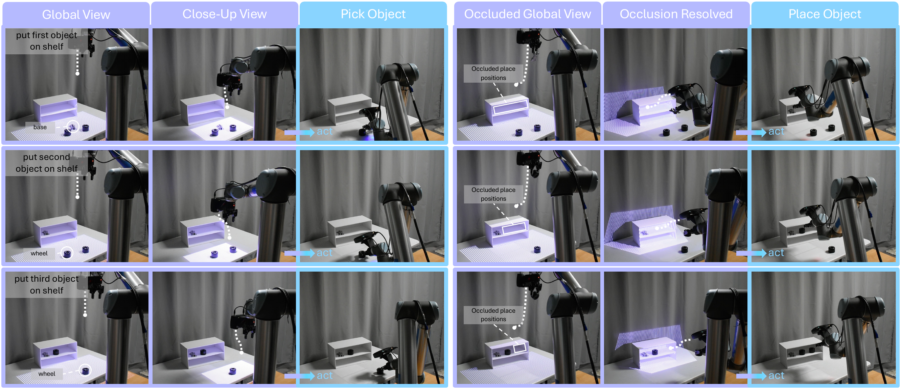
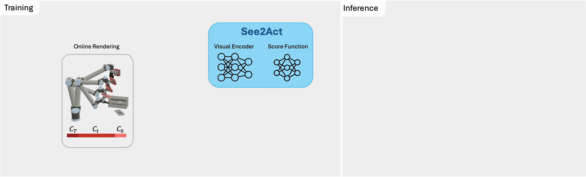
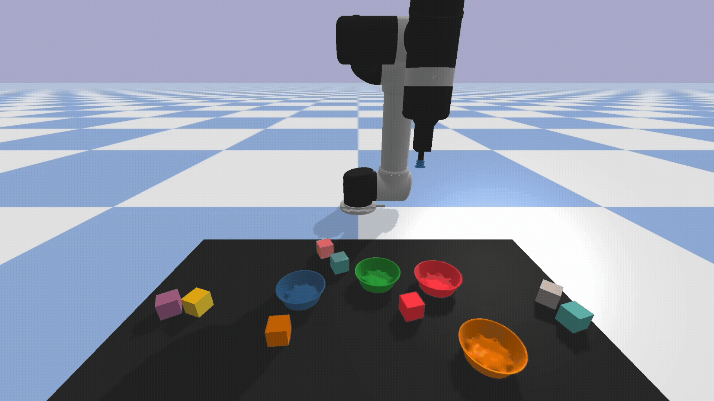
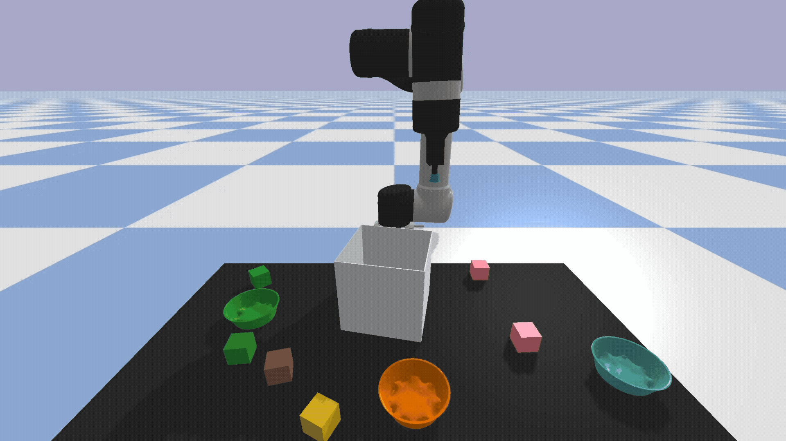
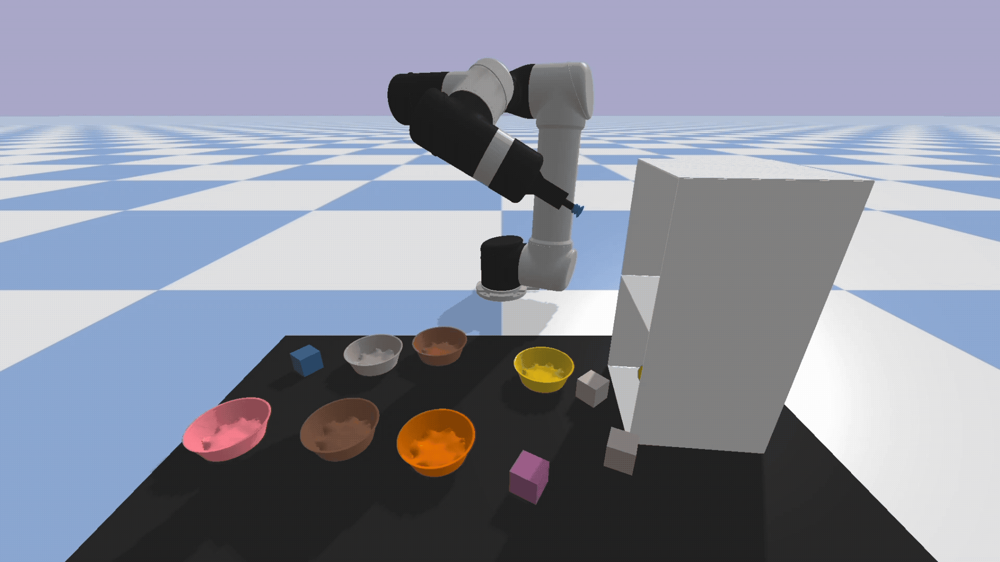
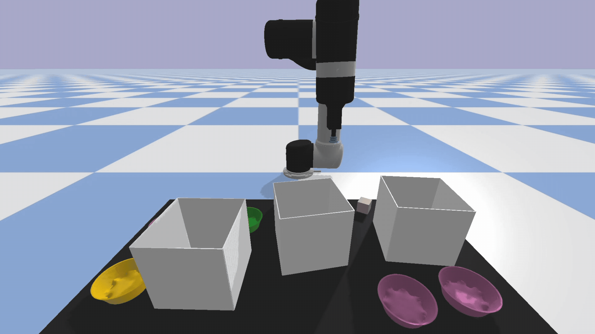
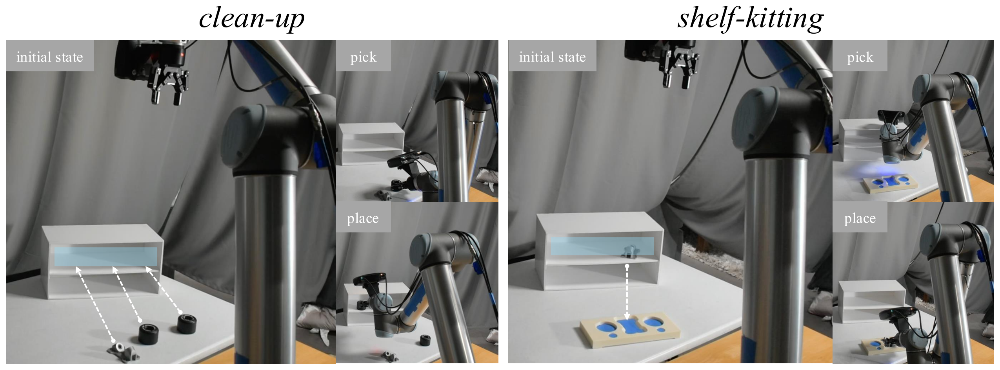

See2Act couples seeing and acting in a single denoising loop. At each step the camera view (see: highlighted region) and the predicted action (act: shown arrow) are refined together: the action sets the next viewpoint, and the new viewpoint denoises the next action. This results in a policy that repositions the camera to reveal placement positions initially hidden from overhead views, achieving 95% zero-shot sim-to-real transfer on tasks with occlusion.
Most imitation learning methods assume full observability in table-top settings. In practice, objects are often occluded, requiring robots to both search and act, and learning this coupled behavior from limited demonstrations remains challenging. We propose See2Act, an imitation learning approach that conditions action prediction on a sequence of actively-inferred viewpoints at test time, by coupling action denoising with viewpoint refinement. The policy is trained using camera poses anchored to keyframe actions from offline demonstrations, enabling implicit learning of where to see, while learning how to act. We empirically demonstrate that in Ravens the policy recovers informative viewpoints under severe occlusions, and on RLBench tasks it improves performance by up to 33% over prior methods. In the real world, we collect 50 demonstrations in a digital twin and achieve zero-shot sim-to-real transfer on pick-and-place tasks using depth observations. The policy handles significant occlusions, showing that learned viewpoint reasoning enables robust manipulation under partial observability.

Left: Training.
Given demonstrations -- extracted object states s and keyframe actions
a0 -- we sample diffusion timesteps t, compute the camera poses
C0, …, CT, render observations Ot
in a digital twin, and generate noisy actions ât by transforming
a0 into each camera frame and adding Gaussian noise. The visual encoder and
score network are trained jointly to predict the noise
with an MSE loss.
Right: Inference.
Starting from an overview view (t = T), See2Act iteratively refines both the
action and the camera pose: at each denoising step it captures an observation, predicts the
noise, updates the action estimate, and computes the next camera pose. The final action is
executed by the robot.
A diagnostic benchmark for tasks with occlusion. The base task is fully observable; three variants add front-view occlusions. Hover a card for details.




See2Act achieves the highest success rate on all four tasks (96%, 96%, 72%, 100%), substantially outperforming all baselines, especially on the more heavily occluded variants where prior methods largely fail.

Real-world tasks showing initial, pick, place states. Blue region shows the area occluded from the camera at its initial overhead pose. Arrows indicate transition from initial to goal.
Detailed walkthrough of our flagship task with step-by-step explanations.
Comparison of See2Act (ours) against diffusion-based multiview baselines on real-robot tasks with occlusion.
See2Act reaches 95% on both shelf-kitting and clean-up from only 50 demonstrations, while Diffusion-MV (25%/50%) and Diffusion-MV-Entropy (50%/50%) need 6,000x more training data. By repositioning its camera close to the target as the action denoises, See2Act gets the close-up views needed for tight-tolerance insertion and stays robust to sim-to-real calibration error, which fixed-view baselines cannot match.
For more details and insights, please refer to the paper.
We presented See2Act, a diffusion-based visuomotor imitation learning framework that jointly denoises actions and full 6-DoF camera trajectories, enabling active perception to resolve occlusions that fixed-view and zoom-only methods cannot handle. Our approach achieves strong performance on tasks requiring active search and precise placement, and transfers zero-shot from simulation to a real robot using depth observations, reaching 95% success with only 50 demonstrations. Requiring a new observation at every denoising step comes with a latency cost, making execution dependent on camera latency and slower than fixed-view methods. We also foresee extending See2Act to dense trajectory prediction as promising future work, expanding the benefits of our framework to dexterous and dynamic manipulation.